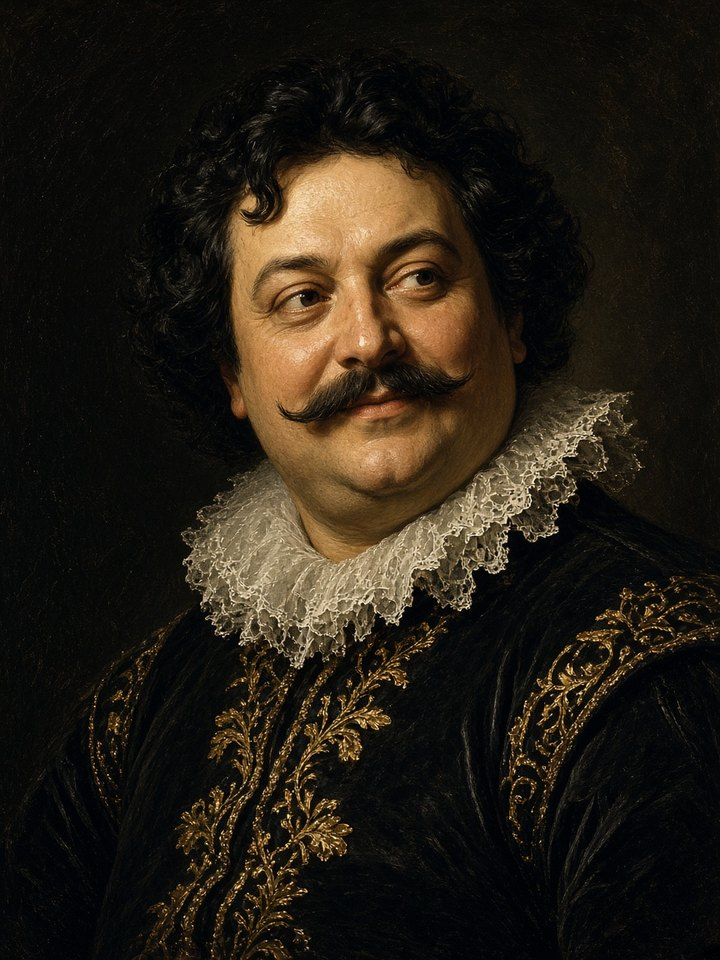
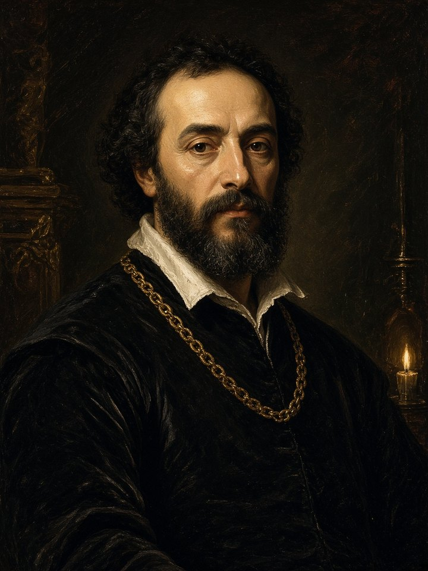
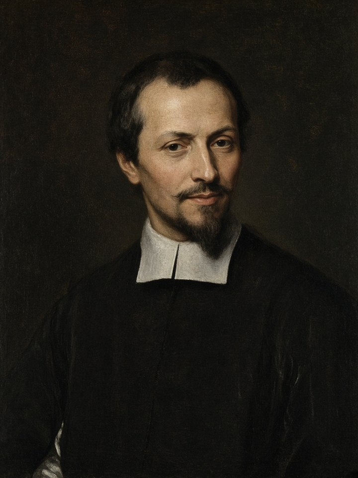
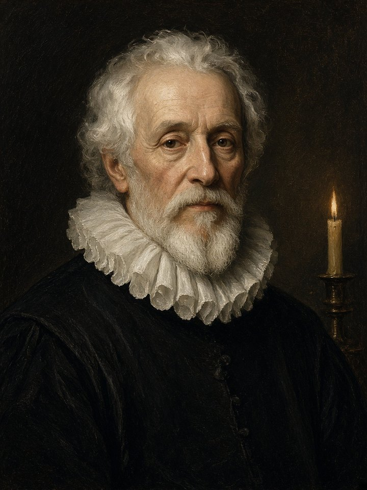
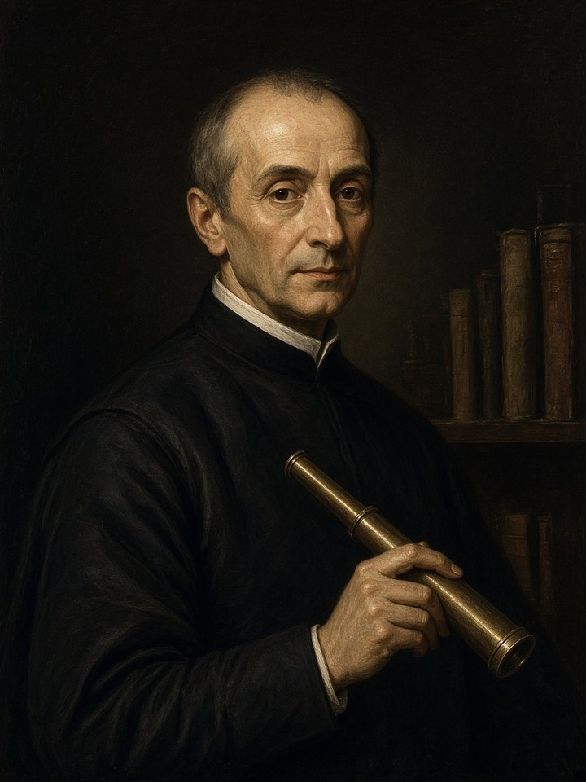
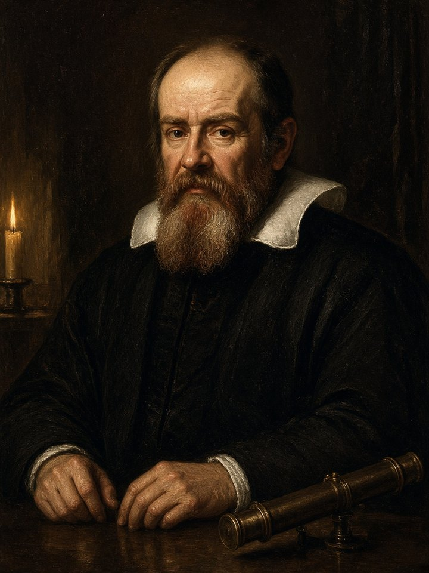

Napoli
Giambattista Marino
1569–1625 · Adone
Il poeta più famoso del Barocco italiano. Vuole stupire. «È del poeta il fin la meraviglia.»

Quarta professionale · Italiano
Seicento · meraviglia · mappa degli autori
Il Barocco italiano è lo stile del Seicento: gli anni 1600.
Arriva dopo il Rinascimento.
Il poeta non vuole solo raccontare. Vuole stupire.
Marino scrive:
«È del poeta il fin la meraviglia.»
Vuol dire: lo scopo del poeta è far restare a bocca aperta.
Questo modo si chiama anche marinismo: lo stile di Marino e di chi lo imita.
Poeti barocchi
Vogliono stupire. Metafore, meraviglia.
Galileo Galilei
Stesso secolo, altro mestiere. Scrive per spiegare, con parole chiare. Non è un poeta barocco.
1. Completa: «È del poeta il fin la ______».
2. Vero o falso: Galileo vuole stupire come Marino.
3. Collega: Tassoni — ? Basile — ? Tesauro — ?
Modena · Napoli · Torino
1. meraviglia. 2. Falso. 3. Tassoni–Modena, Basile–Napoli, Tesauro–Torino.
Napoli
1569–1625 · Adone
Il poeta più famoso del Barocco italiano. Vuole stupire. «È del poeta il fin la meraviglia.»

Napoli
1566–1632 · Lo cunto de li cunti
Fiabe in napoletano. Anche Cenerentola arriva da qui (Gatta Cenerentola).

Modena
1565–1635 · La secchia rapita
Poema buffo: Modena e Bologna litigano per un secchio di legno.

Savona
1552–1638 · odi
Cerca un ritmo più pulito. Meno gonfiore, più musica nel verso.

Torino
1592–1675 · Il cannocchiale aristotelico
Spiega le metafore: la metafora è come un cannocchiale, fa vedere lontano.

Pisa
1564–1642 · prosa scientifica
Non è un poeta barocco. Scrive per spiegare. Stesso secolo, altro modo.
Realizzato dal Prof. Rossano Bella